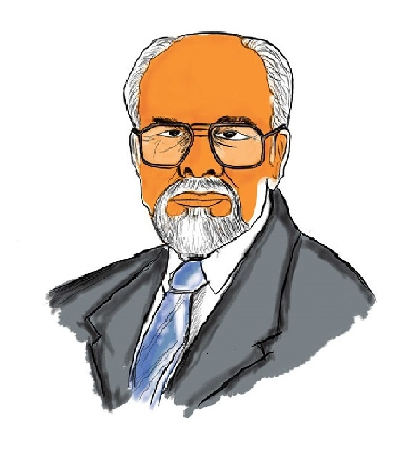

Inder Kumar Gujral was an Indian diplomat, Politician and Freedom Activist who served as the 12th Prime Minister of India from April 1997 to March 1998.
Born in Punjab, he was influenced by Nationalistic ideas as a student, and joined the All India Students Federation and the Communist Party of India. He was imprisoned for taking part in the Quit India Movement. After independence, he joined the Indian National Congress party in 1964, and became a Member of Parliament in the Rajya Sabha (Upper House).
He was the Minister of Information & Broadcasting during the Emergency. In 1976, he was appointed as the Ambassador of India to the Soviet Union (Russia). In 1996, he became the Minister of External Affairs in the Deve Gowda ministry, and developed the Gujral Doctrine during this period. He was appointed the 12th Prime Minister of India in 1997.He retired from all political positions in 1998.
He died in 2012 at the age of 92, following hospitalization due to a Lung infection
read more.
